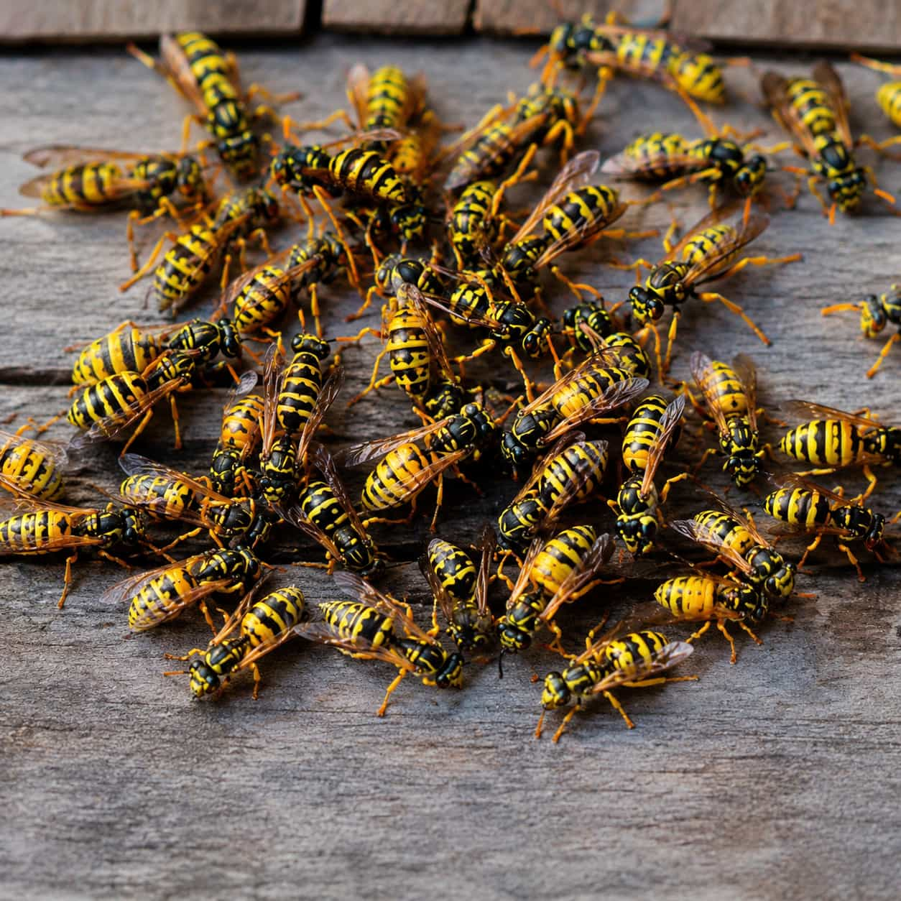
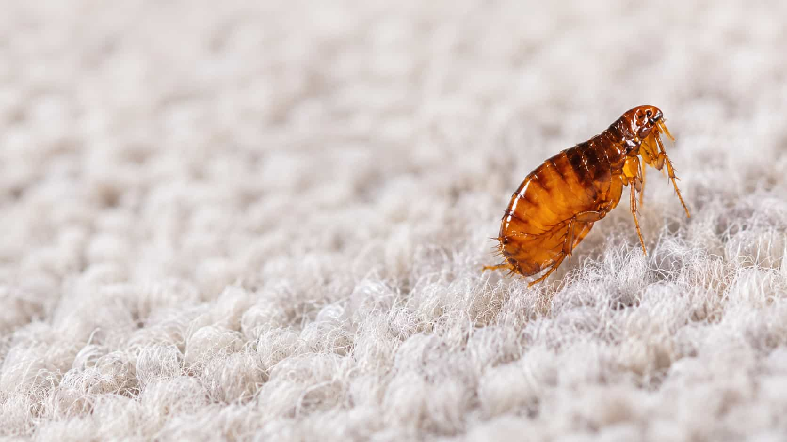
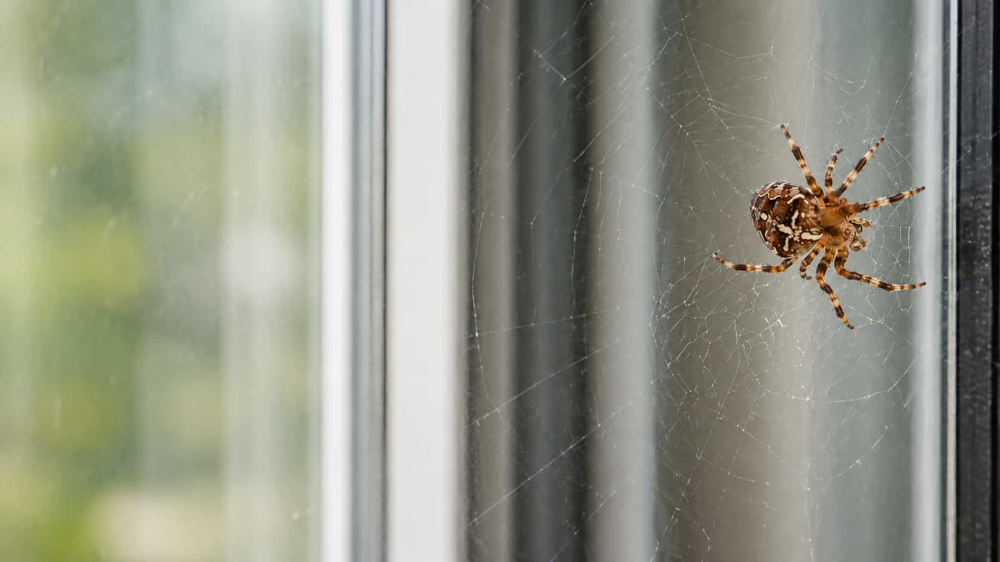
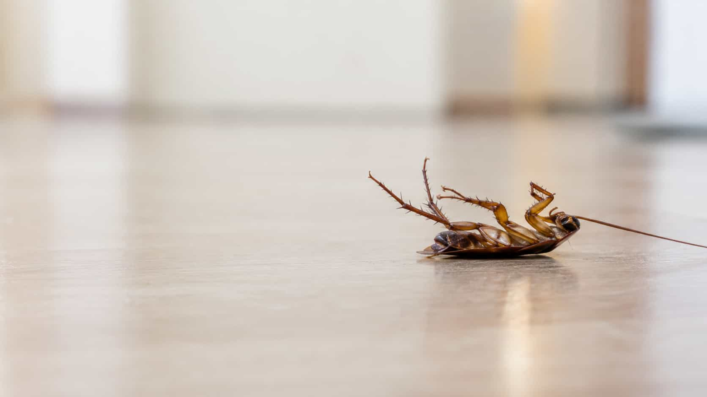

Visible nest near eaves or rooflines
Nests near roof edges, gutters, soffits, siding, or exterior structures may require careful provider review.
Wasp & Hornet Nest Removal
Use this category for visible nests, rooflines, eaves, yard activity, outdoor pathways, and stinging insect concerns. BugGuard helps organize your request for local provider comparison and does not advise DIY nest removal.
Outdoor nest concerns
These examples help describe your request without attempting risky DIY removal. Local providers may evaluate the location, access, activity, and possible next steps.
Nests near roof edges, gutters, soffits, siding, or exterior structures may require careful provider review.
Repeated activity near trees, fences, sheds, patios, or walkways may help define the request location.
Stinging insects near doors, porches, decks, or outdoor seating areas can be important context to include.
If the nest is not visible but activity repeats in one area, local providers may evaluate where it is coming from.

When this category may fit
Wasp and hornet concerns may involve visible nests, repeated activity near a roofline, or outdoor areas where people walk or gather. BugGuard helps organize these details for provider comparison.
Eaves, gutters, soffits, siding, sheds, and rooflines may be important locations.
Activity near doors, decks, porches, play areas, or walkways may feel urgent.
A visible nest location may help providers understand access and possible scope.
Ask about evaluation, access, timing, safety approach, service scope, and limits.
Areas to describe
Stinging insect requests are clearer when you describe where the nest or activity appears. BugGuard helps organize this context for provider matching only.



Share whether the concern involves wasps, hornets.
Note rooflines, eaves, sheds, yard areas, porches, decks.
Describe whether activity is occasional, concentrated.
Local providers may evaluate whether a nest is visible.
Provider options may include evaluation, removal.
Ask about service scope, timing, access needs, possible.